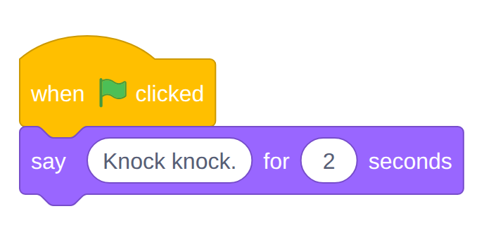
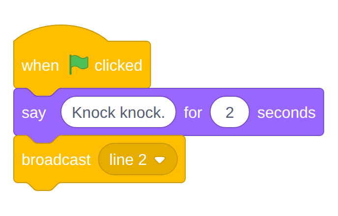
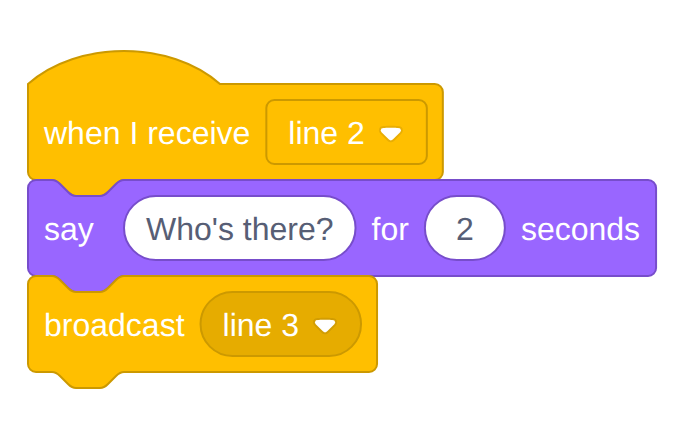
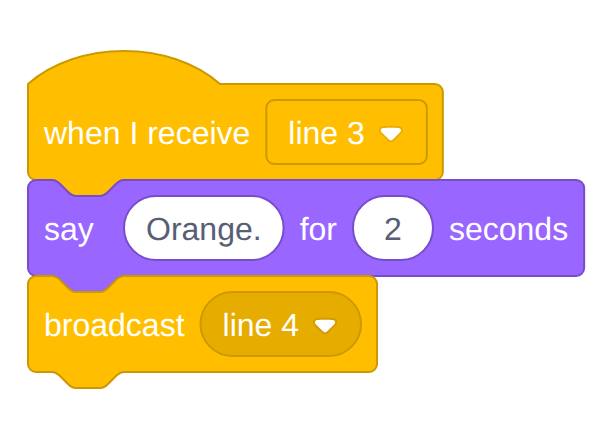
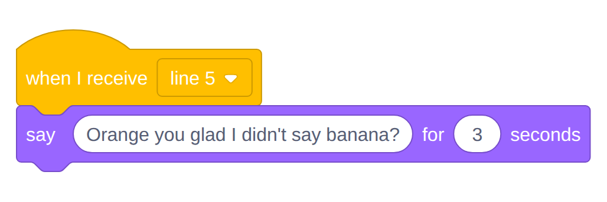
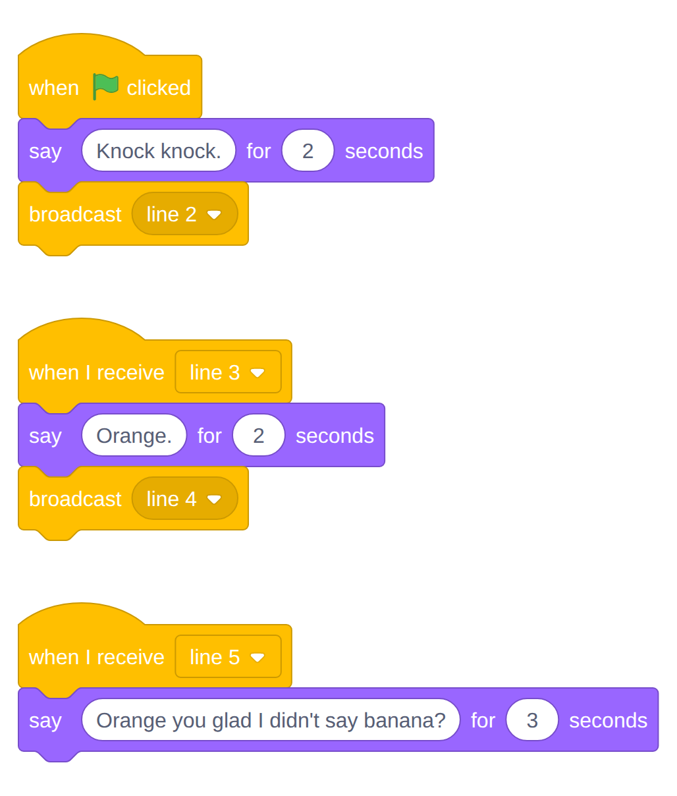
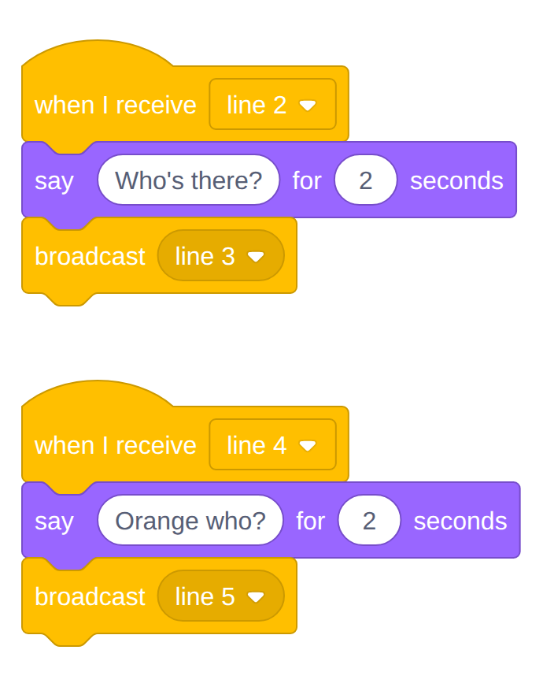
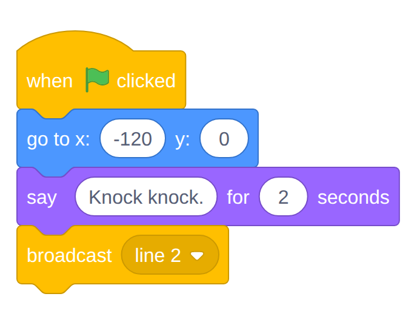

Knock Knock
Two sprites, one joke, and a problem: how does the orange know when it's his line? Today you'll learn the trick real Scratch projects use to make characters take turns, and you'll perform the oldest knock-knock joke in the book. The joke is not good. It is, however, correctly timed.
Overview
A broadcast is a message one sprite sends out to the whole project, and any sprite can be listening for it. In this lab you'll add a second sprite (an orange, for reasons that will become clear), write a five-line joke between the cat and the orange, and use broadcasts to cue each line so they never talk over each other. You'll follow along with me on the projector.
Builds on: Hello, Scratch —
you'll reuse the say for 2 seconds block, the green flag, and go to x: y:.
Before you start
Sign in to Scratch and click Create for a brand-new project. Rename it Knock Knock before you do anything else.
You've got it when…
- Your project has two sprites, Cat and Orange, standing on opposite sides of the stage.
- Clicking the green flag plays the whole joke, one line at a time, in the right order, with nobody talking over anybody.
- Every line after the first is started by a broadcast.
- Knock Knock is saved in My Stuff.
Collaboration & AI
Work: On your own, following along with the class. Help a neighbor find a block, but build your own joke.
AI — AIAS Level 1, No AI: Broadcasts are the one idea this lab exists to teach; learn them by building them. What the levels mean.
Cast the Show
-
In the sprite list, click the cat. In the Sprite name box above the list, change
Sprite1toCat. -
Hover over the round Choose a Sprite button in the bottom right corner of the sprite list, then click the magnifying glass (Choose a Sprite).
-
Type
orangein the search box and click the Orange sprite. It appears on the stage and in your sprite list.Warning
Look at the sprite list before you build anything. Whichever sprite is highlighted is the one your blocks go to. Building the cat's lines inside the orange is the most common mistake in this lab, and the result is an orange that talks to itself.
-
Drag Cat to the left side of the stage and Orange to the right side, so they face each other across the middle.
The First Line
-
Click Cat in the sprite list.
-
From Events, drag out when green flag clicked. From Looks, snap a say for 2 seconds block under it and change the words to
Knock knock.Your screen should look like this.

-
Click the green flag. The cat knocks. The orange does nothing, because nobody told it to.
Cue the Orange
Here is the problem. The orange needs to speak after the cat finishes, not at the same time. We could make the orange wait exactly two seconds, but that falls apart the moment anyone changes a line. Instead, the cat will send a message when it's done, and the orange will wait for that message.
-
Still in Cat, click Events and drag a broadcast message1 block under the say block.
-
Click the dropdown on the broadcast block and choose New message. Name it
line 2and click OK.Your screen should look like this.

What a broadcast does
Think of a stage manager standing in the wings whispering "line 2." The broadcast block shouts a message to every sprite in the project. It doesn't do anything by itself; it only matters if some sprite is listening for that exact message. That's the orange's job next.
-
Click Orange in the sprite list. The code area goes empty, because the orange has no code yet. That's correct.
-
From Events, drag out when I receive line 2. (If the dropdown shows something else, click it and pick line 2.)
-
Snap a say for 2 seconds block under it with the words
Who's there? -
Snap a broadcast block under that, make a New message named
line 3.Your screen should look like this.

-
Click the green flag. Cat knocks, then the orange asks who's there. Two lines, two sprites, no overlap.
Checkpoint
If the orange spoke after the cat instead of at the same time, your broadcast worked. Everything else today is more of the same.
Finish the Joke
The pattern repeats: receive a message, say your line, broadcast the next message. Build the last three lines the same way.
-
Click Cat. Build a new script (not attached to the first one): when I receive line 3, say
Orange.for 2 seconds, broadcast a new messageline 4.Your screen should look like this.

-
Click Orange. Add a new script: when I receive line 4, say
Orange who?for 2 seconds, broadcast a new messageline 5.Your screen should look like this.
-
Click Cat. Add a third script: when I receive line 5, say
Orange you glad I didn't say banana?for 3 seconds. The punchline gets an extra second; it has earned it. Nothing to broadcast this time, because the joke is over.Your screen should look like this.

-
Click the green flag and watch the whole joke. When it finishes, the cat's code area should hold three separate scripts and the orange's should hold two.
Your screen should look like this.


Warning
If a line never plays, click the sprite that should say it and check the dropdown on its when I receive block. A script listening for
line 3will wait forever if the cat is broadcastingline 4.
Places, Everyone
One more problem: if you drag the sprites around while you're working, the joke starts wherever you left them. A real show starts the same way every night.
-
Click Cat. Drag a go to x: y: block from Motion into the first script, between when green flag clicked and the first say block. Set it to
x: -120andy: 0.Your screen should look like this.

-
Click Orange. Add a new script: when green flag clicked, go to x: 120 y: 0. (The orange's other scripts stay as they are.)
-
Drag both sprites into the corners, click the green flag, and confirm they snap to their marks before the joke starts.
-
Click
File ▸ Save now.
Challenges
Try these on your own once the joke plays start to finish.
- Add a backdrop. Click the Choose a Backdrop button in the bottom right corner of the stage and pick a scene for the joke.
- A third character. Add a sprite that says
Ugh.after the punchline. Which sprite has to broadcast a message for that to work? - Same cue, two sprites. Make the orange and the new sprite both react
to
line 5. More than one sprite can listen for the same message.
Turn It In
- Nothing to upload today. Your Knock Knock project is saved in your Scratch account under My Stuff; I'll check it on your screen.
- In your Scratch notebook entry, write one or two sentences explaining what a broadcast does, in your own words.
Credit: Adapted for sixth grade from Dan Schellenberg's Computer Science 20: Introduction to Scratch (Broadcasts), used under a Creative Commons Attribution-ShareAlike 4.0 license.
How It's Graded
This lab is worth up to 4 points. One score covers everything you turn in.
| Score | What it looks like |
|---|---|
| 4 — Excellent | Green flag: both sprites snap to their marks, and all five lines play in order with no overlap, each one after the first cued by its own broadcast; the sprites are named Cat and Orange; and your notebook explanation of a broadcast would make sense to someone who missed class. |
| 3 — Above Average | The joke plays correctly with a slip or two — sprites that don't reset their positions, a line that lingers too long, or a sprite still named Sprite1. |
| 2 — Average | Some lines play and some don't (a broadcast name that doesn't match), or lines are timed with waits instead of broadcasts. |
| 1 — Below Average | The cat knocks and nothing else happens. |
| 0 — Failing | No Knock Knock project in My Stuff. |